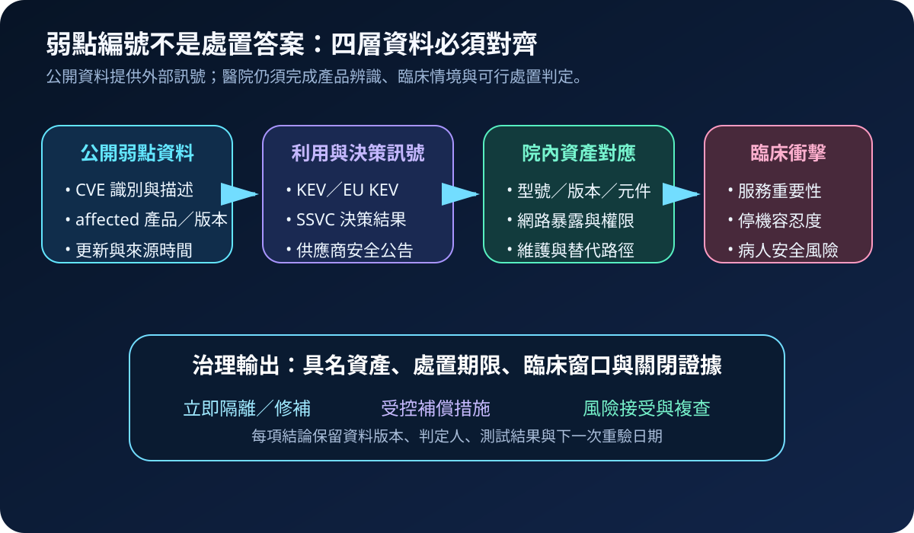
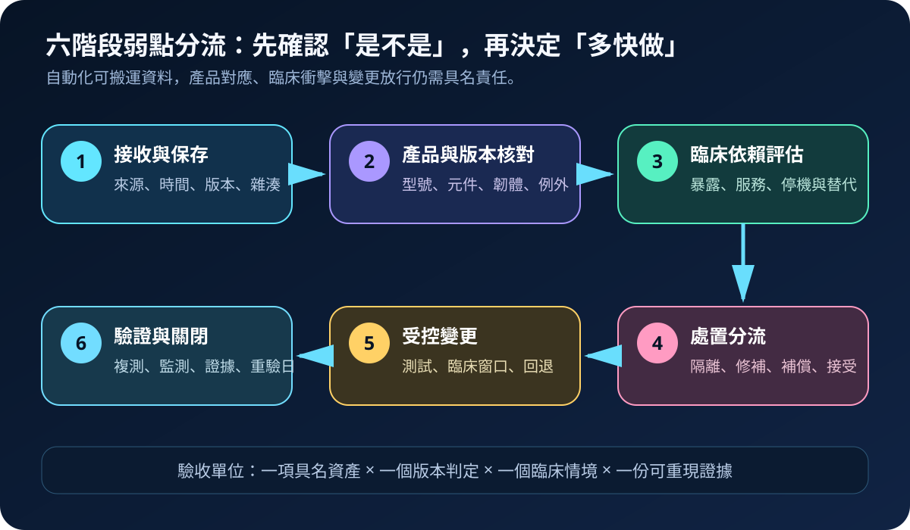
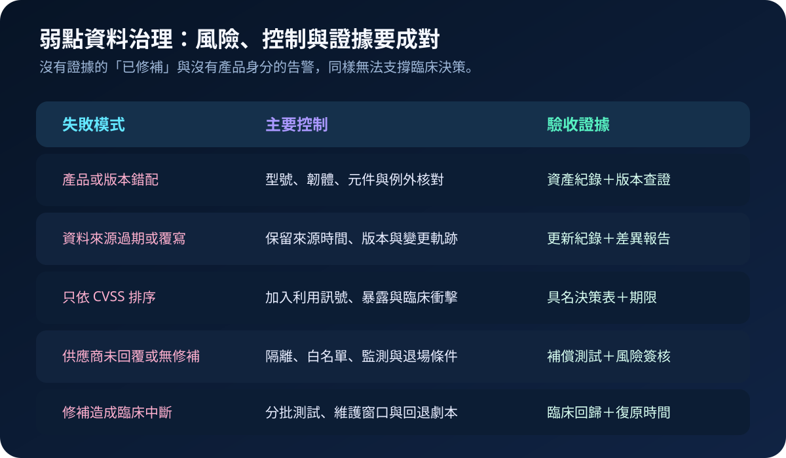

醫療資安國際觀察 · 2026-10-22
醫療弱點資料如何避免錯配：從 affected 版本到臨床分流
作者：Dr. William｜醫療資訊與資安治理實務工作者
同一個 CVE 可能影響特定產品、版本、元件或部署條件，也可能在後續更新中改變判定。醫院若只依弱點名稱或 CVSS 分數派工，容易把不受影響設備列為緊急，或漏掉真正暴露且支撐臨床服務的資產。
名詞解釋：affected 是產品對應，不是風險結論
CVE提供公開弱點識別；affected欄位用來描述受影響產品與版本範圍；SSVC則以可利用狀態、技術影響與任務重要性等決策點支援處置分流。這些資料仍須與院內型號、韌體、軟體元件、網路暴露、權限及臨床依賴對應，才可形成具名處置。
國際現況與適用邊界
NIST 於 2026 年調整 NVD 弱點資料處理，逐步加入 SSVC 評估，並在 CVE 資料中提供 affected 產品與版本資訊；NIST 同時強調資料增強模式仍在持續改善。CISA 的 SSVC 指引提供決策樹方法，協助將弱點從單一分數轉成具情境的處置選項。ENISA 則維運歐洲弱點資料與協調服務，供歐盟漏洞揭露與產品治理使用。
台灣適用原則：NVD、CISA SSVC 與 ENISA 服務屬國外資料與決策參考，不是台灣醫療機構的直接法定義務。醫院可採用其欄位與分流方法，但處置期限、風險接受、病人安全及停機決策仍須依台灣法令、主管機關要求、院內權責與實際臨床情境辦理。
規劃：建立可追溯的資料與責任模型
範圍宜先涵蓋對外服務、核心醫療資訊系統、醫療設備、身分平台、備份管理與遠端維護元件。每筆判定記錄資料來源與時間、CVE、affected 範圍、院內資產識別、實際版本、暴露條件、臨床服務、供應商回覆、處置期限、核准者及重驗日期。驗收指標可包含資產對應率、版本可確認率、誤報關閉時間、高風險判定時效、逾期補償控制覆蓋率與複測成功率。
實作：六階段形成處置閉環
- 接收：保存 NVD、CISA、ENISA、製造商或協調單位的原始資料、發布時間與更新版本。
- 核對：以型號、韌體、套件、元件及部署條件確認是否真正落在 affected 範圍。
- 評估：加入主動利用訊號、外部暴露、權限、資料敏感度、臨床重要性及替代流程。
- 分流：決定立即隔離、緊急修補、受控補償、排程更新或具期限的風險接受。
- 變更：在測試環境驗證修補與臨床回歸，設定維護窗口、備援與回退條件。
- 關閉：以版本查證、弱點複測、監測結果與臨床驗收證明風險已降低，並保留下一次重驗日期。

風險：資料完整不代表現場正確
常見失敗包括產品名稱相似而錯配、資料更新後未重算、只用 CVSS 排序、供應商未回覆即長期擱置，以及修補未經臨床回歸便直接上線。緩解方式包括保存資料版本、建立資產與元件身分、交叉核對製造商公告、設定補償控制期限、以多角色核准高影響變更，並用負向測試確認不受影響資產不會被誤派工。

可執行清單
- 每筆高風險弱點是否已對應到具名資產、實際版本與責任單位？
- affected 範圍是否與製造商公告、SBOM 或設備資料交叉核對？
- 排序是否同時納入利用訊號、暴露條件與臨床服務衝擊？
- 無法立即修補時，補償控制、到期日與退場條件是否明確？
- 修補是否完成技術複測、臨床回歸與必要的回退演練？
- 外部資料更新後，既有判定是否會自動重新開啟或重算？
來源
- NIST NVD｜Update on NVD Enrichment Efforts（更新：2026-06-17；查閱：2026-10-22）
- NIST NVD｜SSVC Decision Outcomes Added to CVE Records（發布：2026-06-25；查閱：2026-10-22）
- NIST NVD｜NVD Adds SSVC Assessments and Affected Product Data（發布：2026-08-26；查閱：2026-10-22）
- CISA｜Stakeholder-Specific Vulnerability Categorization（文件頁面；查閱：2026-10-22）
- ENISA｜Vulnerability Disclosure（服務頁面；查閱：2026-10-22）
內容說明
本文依健康台灣深耕計畫相關治理內容整理，並參考 NIST、CISA 與 ENISA 公開資料，提出弱點資料接收、產品版本核對、臨床分流、受控變更與驗證關閉方法；不把國外資料服務或決策模型視為台灣法定義務，也不取代主管機關公告、製造商說明、院內臨床治理或法律意見。